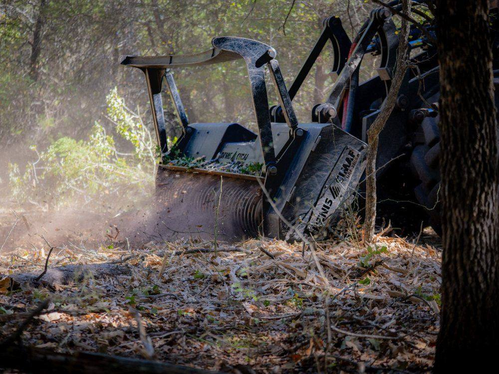
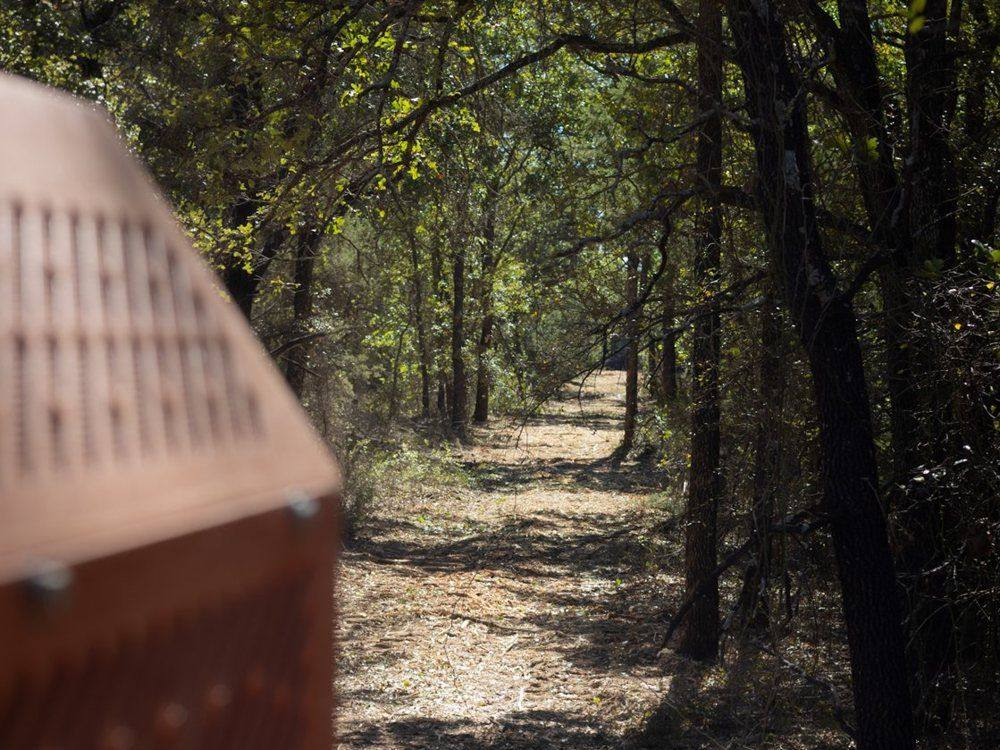
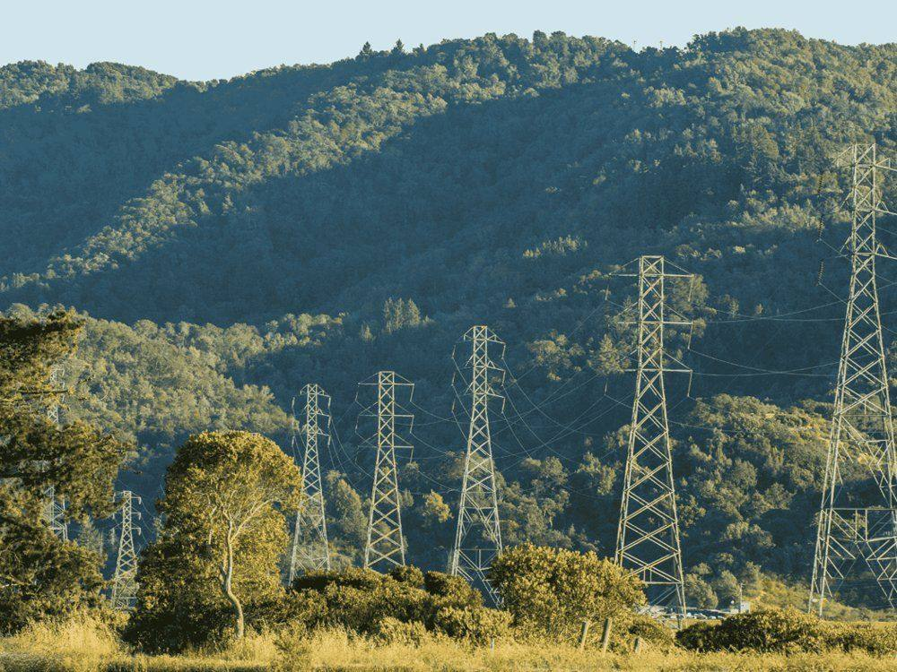
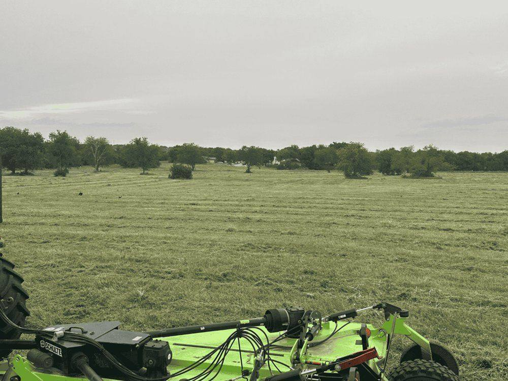
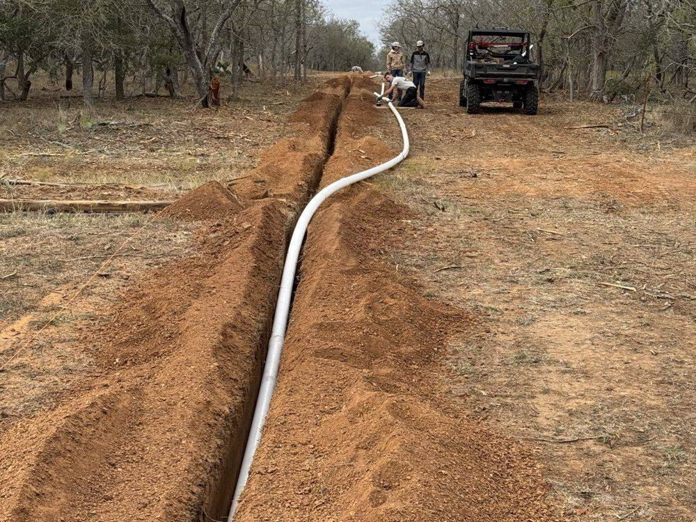

Our Services
From a single overgrown acre to multi-thousand-acre utility corridors, we tailor every job to the land, the timeline, and the long-term goal. Explore each service below.
Serving Spring Branch, Bulverde, New Braunfels, Canyon Lake, Boerne, San Antonio, San Marcos, the Texas Hill Country, and clients across Central Texas.

Forestry mulching and land clearing are the core of what we do at 9 Arrow. Our approach combines high-production equipment, experienced oper…
Learn more ›››
Precision line survey clearing was developed in direct response to a need we repeatedly encountered while clearing for development clients —…
Learn more ›››
Our right-of-way clearing services support utility companies, service providers, and field contractors who need dependable, large-scale clea…
Learn more ›››
Roads and access preparation is a critical service for many of our clients — particularly developers who need reliable access to properties …
Learn more ›››
The Grounds Maintenance division of 9 Arrow meets ongoing property-care needs — from residential and commercial sites to large-scale infrast…
Learn more ›››
Our site work and light utility installation services prepare land for construction, infrastructure, and long-term use. From reshaping terra…
Learn more ›››It does not get better.
Tell us about your land — we'll point you in the right direction and tell you the cost before we start.
Request an Estimate